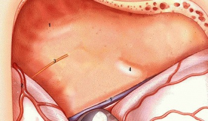
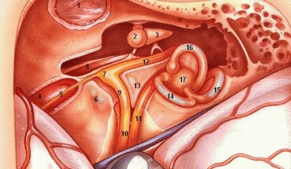

Easy MCF Ear

1. Middle fossa floor
2. Middle meningeal artery
- leads to foramen spinosum which is the most anterior landmark for orientation in middle fossa approach
3. Greater superficial petrosal nerve in facial hiatus
- lies 1 cm medial to foramen spinosum
- axis of nerve runs medial to petrous pyramid
4. Arcuate eminence
- landmark for superior semicircular canal (not for IAC)
- absent in 15%
5. Superior petrosal sinus
Finding IAC
- longitudinal axis of superior SCC forms a 60 degree angle with longitudinal axis of IAC anteriorly
- if no landmarks, then open attic 1.5 cm behind
foramen spinosum and just medial to junction of squamous and petrosal
bone. Expose ossicles, cochelariform process, and facial canal
wich is followed to IAC.

1. TMJ in glenoid fossa
2. Malleus (head)
- note tendon of tensor tympani from cochleariform process which attaches to neck of malleus
3. Incus (body)
4. Internal carotid artery
5. GSPN
6. Cochlea (bluelined)
- petrous apex air cells lie just anterior
7. Geniculate ganglion
- may be dehiscent in 25% of specimens
8. Tensor tympani muscle
- Eustachian tube lies just lateral to muscle
9. Facial nerve (labyrinthine segment)
- note falciform (transverse) crest below
10. Facial nerve (meatal segment)
- note cochlear nerve below
11. Superior vestibular nerve
- innervates superior and horizontal SCC and utricle
- inferior vestibular nerve (not shown)
~ lies below SVN
~ singular nerve innervates posterior SCC
~ ampullary nerve innervates saccule
12. Facial nerve (tympanic segment)
13. Bill's bar (vertical crest)
14. Superior (anterior) semicircular canal
15. Posterior semicircular canal
16. Horizontal (lateral) semicircular canal
17. Vestibule
Images credit: Dr. F. Ling